경영지도사-1차-2교시(구) (2014-05-17 기출문제)
1과목: 기업진단론
1. 경영분석(business analysis)에 관한 설명으로 옳지 않은 것은?
- 경영분석은 재무제표 이외에 기업의 모든 내‧외적 관련 자료를 분석대상으로 한다.
- 계량자료 보다는 최대한 비율분석을 활용하여 기업 이해관계자의 정보욕구를 충족시킨다.
- 기업규모의 확대와 자본시장이 발전함에 따라 이해관계자들이 요구하는 정보의 유형은 다양해지고 있다.
- 객관적인 표준비율과 비교함으로써 의미있는 정보를 얻는다.
- 경영분석은 기업의 미래 상황을 예측하여 이해관계자들이 기업과 관련된 다양한 의사결정을 실행하는데 이용된다.
(정답률: 알수없음)

2. 포괄손익계산서에 관한 설명으로 옳지 않은 것은?
- 계량화가 불가능한 질적인 요소가 많다.
- 회계이익에는 주주의 기회비용이 반영되어 있다.
- 작성자의 주관이 개입될 여지가 크다.
- 수익은 판매가격에 의하여 측정되는 반면에 비용은 역사적 원가에 의하여 측정된다.
- 회계이익이 기업의 현금결제능력을 의미하지는 않는다.
(정답률: 알수없음)
3. 경영분석에서 활용되는 비회계자료가 아닌 것은?
- 증권시장자료
- 경제관련자료
- 경영분석 통계자료
- 인터넷자료
- 포괄손익계산서
(정답률: 알수없음)
4. 유동성비율에 관한 설명으로 모두 옳은 것은?
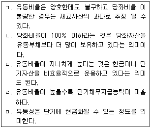
- ㄱ, ㄴ, ㄹ
- ㄱ, ㄷ, ㅁ
- ㄴ, ㄷ, ㅁ
- ㄴ, ㄹ, ㅁ
- ㄷ, ㄹ, ㅁ
(정답률: 알수없음)
5. 영업이익 50,000원, 이자비용 3,000원, 당기순이익 18,000원, 부채 5,000원, 자기자본 30,000원일 경우 자기자본순이익률(ROE: Return On Equity)을 구한 값으로 옳은 것은?
- 10 %
- 30 %
- 50 %
- 60 %
- 80 %
(정답률: 알수없음)
6. “고품질의 제품은 경쟁제품 만큼 유용하고 경쟁기업의 제품보다 더 낮은 가격에 팔리는 제품이다. 또한 비슷한 가격대에서 더 큰 유용성이나 만족을 제공하는 제품이다”라는 접근은 어떤 관점에서 품질을 설명한 것인가?
- 가치기반 관점
- 제조기반 관점
- 통합 관점
- 사용자 기반 관점
- 제품기반 관점
(정답률: 알수없음)
7. 부문별 경영분석 대상범위와 목적을 연결한 것으로 옳지 않은 것은?
- 인사조직 - 활동성
- 마케팅 - 성장성
- 생산관리 - 생산성
- 연구개발 - 통제성
- 재무활동 - 유동성
(정답률: 알수없음)
8. 기업부실의 주요원인으로써 경영외적인 요소에 포함되지 않은 것은?
- 경기 변동심화
- 방만한 경영
- 가격경쟁의 심화
- 글로벌 경쟁위기
- 긴축금융기조 유지
(정답률: 알수없음)
9. 진단결과를 종합하여 작성하는 권고 보고서의 작성원칙으로 옳지 않은 것은?
- 논리적 정서성
- 제시문제의 구체적 명확성
- 시스템적 간결성
- 개선방향의 포괄성
- 제안의 실현 가능성
(정답률: 알수없음)
10. 기업의 생산부문에 대한 세부 진단 대상항목으로 옳지 않은 것은?
- 손익관리
- 자재관리
- 공정관리
- 작업관리
- 구매관리
(정답률: 알수없음)
11. ㈜금곡의 기말계정별 잔액이다. 재무상태표상 자본총계에 해당하는 금액은?
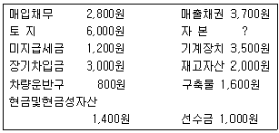
- 7,000원
- 8,000원
- 9,000원
- 10,000원
- 11,000원
(정답률: 알수없음)
12. 듀퐁(Dupont)의 재무통제기법에 관한 설명으로 옳은 것은?
- 자기자본순이익률(ROE)를 높이기 위해서는 순이익의 크기를 높여야 하고, 자산을 활발하게 사용하여 매출액을 높여야 하며 부채레버리지비율을 낮추어야 한다.
- 총자본회전율은 총자본을 매출액으로 나눈 값으로 매출을 발생시키는데 자산을 얼마나 활발하게 이용하였는가를 나타낸다.
- 매출액순이익률(net profit margin)은 기업의 가격 정책에 대한 정보를 제공하는 것으로 매출액순이익률이 높으면 총자본회전율도 높아진다.
- 총자산회전율(total assets turnover)은 변하지 않았는데 총자산수익률(ROA)이 하락되었다면 경쟁사의 출현에 따른 수익성 악화가 원인일 수 있다.
- 자기자본순이익률(ROE)은 경영성과를 측정하는 지표인 동시에 경영자의 능력을 평가하는 지표로서 전년보다 상승하면 주주에게 손해가 발생된다.
(정답률: 알수없음)
13. 재무관리 부문의 세부 진단 착안사항으로 옳지 않은 것은?
- 자금조달 및 운용 합리성 진단
- 자금수지계획의 타당성 진단
- 판매조직과 판매예측의 진단
- 회계처리의 타당성 진단
- 재무관리 전반에 대한 진단
(정답률: 알수없음)
14. 사용품질 또는 시장품질에 해당되지 않은 것은?
- 서비스의 질에 대한 만족도
- 보증 및 보상에 대한 만족도
- 애프터서비스에 대한 만족도
- 클레임 처리에 대한 만족도
- 제품의 강도에 대한 만족도
(정답률: 알수없음)
15. 주식회사와 관련한 설명으로 옳지 않은 것은?
- 주식회사의 최고의사결정기구는 이사회이다.
- 주주는 기업의 소유주로서 유한책임을 지닌다.
- 대규모 자금을 조달할 수 있는 효과적인 기업형태이다.
- 보통주의 주주는 의결권을 가지므로 일반적으로 보통주의 주가가 우선주보다 높게 형성된다.
- 우리나라 대부분의 기업형태는 주식회사이다.
(정답률: 알수없음)
16. 재무상태표의 유용성으로 옳지 않은 것은?
- 일정시점의 기업 재무상태를 알 수 있게 한다.
- 기업의 재산내역을 알 수 있게 한다.
- 기업의 일정기간의 경영성과와 세금을 결정하는데 자료가 된다.
- 기업의 자산구조가 어떤지를 알 수 있게 한다.
- 기업의 지급능력이 어떤지를 알 수 있게 한다.
(정답률: 알수없음)
17. 전통적 경영분석의 한계점을 보완한 현대적 경영분석의 특징으로 옳지 않은 것은?
- 경영분석은 의사결정을 위한 하위시스템의 하나로 파악한다.
- 경영분석을 위해 기업관련 자료를 광범위하게 활용한다.
- 기업의 회계자료를 이용하여 과거와 현재의 재무상태와 경영성과를 파악함으로써 미래를 예측한다.
- 경영분석을 위해 계량적, 통계적 분석방법을 활용한다.
- 기업규모 확대와 자본시장 개방, 다양한 이해관계자의 요구에 부응하기 위해 분석방법이 다양화되고 있다.
(정답률: 알수없음)
18. 동태비율에 해당하지 않은 것은?
- 유동비율
- 매출액순이익률
- 총자산회전율
- 이자보상비율
- 총자산순이익률
(정답률: 알수없음)
19. 기업의 경영성과를 나타내는 항목이 아닌 것은?
- 당기순이익
- 기타포괄손익
- 총포괄손익
- 자기주식처분이익
- 주당순이익
(정답률: 알수없음)
20. 현금흐름표(statement of cash flows)의 재무활동으로 인한 현금흐름에 해당하지 않은 것은?
- 배당금 지급
- 주주출자금
- 단기차입금의 차입
- 대여금의 회수
- 사채의 상환
(정답률: 알수없음)
21. 현금 100만원, 감가상각비 250만원, 매입채무 300만원, 미지급비용 210만원, 장기차입금 6,800만원, 자본금 8,000만원, 이익잉여금 500만원인 경우 부채비율은?
- 86 %
- 88 %
- 90 %
- 95 %
- 102 %
(정답률: 알수없음)
22. 유동자산 5,000원, 유동부채 3,000원, 재고자산 1,500원, 선급보험료 500원, 현금 1,500원, 예금 500원, 매출채권 1,000원인 경우 당좌비율은?
- 60 %
- 70 %
- 80 %
- 90 %
- 100 %
(정답률: 알수없음)
23. 기업의 비용 통제에 효율적으로 사용될 수 있는 재무비율은?
- 부채비율
- 부채구성비율
- 매출액증가율
- 영업현금흐름 대 부채비율
- 매출액순이익률
(정답률: 알수없음)
24. 기업진단에 활용되는 재무비율분석에 관한 설명으로 옳지 않은 것은?
- 기업의 고정영업비용은 자산구성과 관련되어 있다.
- 기업의 고정재무비용은 자본구조와 관련되어 있다.
- 기업의 수익성을 평가할 때 자기자본순이익률(ROE)은 자기자본비용과 비교되어야 한다.
- 기업의 수익성을 평가할 때 총자산순이익률(ROA)은 가중평균자본비용과 비교되어야 한다.
- 경제적 부가가치는 세후순이익에서 영업활동에 투하된 자기자본비용을 공제하여 측정되므로 잔여순이익이다.
(정답률: 알수없음)
25. 손익분기점(BEP)분석에 관한 설명으로 옳지 않은 것은?
- 손익분기점(BEP)분석을 활용하기 위해 모든 원가는 변동원가와 고정원가로 구분되어져야 된다.
- 기능별 분류법에 의해 작성된 포괄손익계산서는 손익분기점(BEP)분석에 있어 편리하게 활용될 수있다.
- 자본집약적인 생산기술을 이용할 경우 매출액이 높은 수준에서는 영업레버리지가 높아져 영업이익 수준이 높아진다.
- 노동집약적인 생산을 할 경우 고정비가 낮게되어 영업레버리지가 낮게 된다.
- 매출액이 높을 것으로 예상되면 영업레버리지도가 높은 생산기술을 이용하는 것이 유리하다.
(정답률: 알수없음)
26. 현금흐름표의 영업활동으로 인한 현금흐름을 간접법으로 작성할 때 당기순이익 조정항목에 관한설명으로 옳지 않은 것은?
- 감가상각비는 가산한다.
- 유형자산처분이익은 가산한다.
- 재고자산의 증가는 차감한다.
- 미지급임금의 증가는 가산한다.
- 사채할인발행차금상각액은 가산한다.
(정답률: 알수없음)
27. 균형성과표(BSC)에서 제시되는 성과지표가 아닌것은?
- 재무지표
- 고객지표
- 내부프로세스지표
- 학습과 성장지표
- 시너지지표
(정답률: 알수없음)
28. 최근 기업의 경영상태를 분석한 결과 매출이 감소되고 재고자산이 증가하고 있다. 이에 관한 설명으로 옳은 것은?
- 총자본회전율과 매출액순이익률이 증가하여 총자산순이익률(ROA)이 증가한다.
- 재고자산회전율은 낮아지고 재고자산 회전기간은 증가한다.
- 매출채권회전율의 증가로 현금흐름이 양호해진다.
- 매입채무회전율의 증가로 현금흐름이 나빠지게 된다.
- 유동자산이 증가하여 기업의 부채비율을 감소시킨다.
(정답률: 알수없음)
29. 질적 분석과 양적 분석에 관한 설명으로 옳지 않은 것은?
- 재무분석에서 비계량적 자료는 분석자의 주관이 많이 개입되기 때문에, 계량적인 회계자료 분석에 국한해야 한다.
- 산업구조 분석은 해당 산업의 경쟁강도를 결정짓는 구조적 경쟁요인을 분석하는 것이다.
- 재무제표 수치 이면에 자산과 부채가 지니는 질적능력을 추가로 분석하면 재무융통성을 보다 적절히 평가할 수 있다.
- 산업분석은 기본적 분석, 산업구조 분석, 제품수명주기 분석 등을 통해 수행된다.
- 경영자의 능력을 평가하기 위해서는 경영자가 기업의 생산, 판매 관리에 관하여 얼마나 적절한 의사결정을 할 수 있는가 하는 것 이외에도 경영철학, 경영진 구성, 경영진 평판 등을 고려한다.
(정답률: 알수없음)
30. 현금흐름할인모형(Discounted Cash Flow Model)에 관한 설명으로 옳지 않은 것은?
- 현금흐름할인모형은 잉여현금흐름 할인모형을 지칭하며, 기업의 영업 활동에 의한 잉여현금흐름으로 기업가치를 평가한다.
- 할인율은 경영자 관점에서 요구수익률이자 기업의 필수수익률이 되고, 기업의 관점에서 보면 자본조달의 대가인 자본비용이 된다.
- 영업현금유입액에서 영업현금유출액을 차감하여 영업활동 현금흐름을 구한다.
- 잉여현금흐름(Free Cash Flow)는 세후순영업이익에서 영업투하자본의 증가분을 차감한 것이다.
- 현금흐름할인모형은 어떤 투자자본에 대한 현금흐름이냐에 따라 총투자자본 현금흐름할인모형과 자기자본 현금흐름할인모형이 있다.
(정답률: 알수없음)
31. 기업의 신규시장 진입 용이성은 해당 기업의 수익성을 결정하는데 있어 주요 결정요소이다. 다음중 진입장벽을 결정하는 요소 중 옳지 않은 것은?
- 법적장벽
- 시장선점효과
- 적은 교체비용
- 규모의 경제 존재
- 판매망 접근 및 관계
(정답률: 알수없음)
32. 품질경영에 관한 설명으로 옳지 않은 것은?
- 직원도 내부고객이므로 고객만족을 추진하여야 한다.
- 6시그마는 프로세스 개선과 전사적 혁신을 추진하는 전략이다.
- 고객만족전략의 대상은 불만족한 고객을 충성고객으로 만드는 일련의 과정이다.
- 품질코스트란 제품과 공정이 완전하다면 발생되지 않는 코스트를 의미한다.
- 종합적품질경영(TQM)은 전체 조직원들이 참여하여 자원의 효과적인 이용과 지속적인 개선을 추구하는 전략이다.
(정답률: 알수없음)
33. 정보이용자 유형별 재무정보의 이용 목적으로 옳지 않은 것은?
- 경영자 입장에서 경영관리에 필요한 정보의 제공
- 채권자의 입장에서 채권회수가능성 검토
- 투자자의 입장에서 투자 수익성, 안전성 검토
- 정부 입장에서 산업정책 및 가격결정 정책수립
- 개인 입장에서 과세소득 자료 수집
(정답률: 알수없음)
34. 규모가 다른 기업 간 재무상태 및 경영성과를 쉽게 비교 분석할 수 있는 재무제표 유형은?
- 지수형 재무제표
- 공통형 재무제표
- 비교 재무제표
- 추세 재무제표
- 일반목적 재무제표
(정답률: 알수없음)
35. 기업의 안전성을 나타내는 비율로써 옳지 않은 것은?
- 부채비율
- 당좌비율
- 총자산순이익률
- 유동비율
- 자기자본비율
(정답률: 알수없음)
36. (주)금곡은 받을어음을 담보로 은행에서 현금을 단기차입하였다. 이 거래가 ㈜금곡의 유동비율과 부채비율에 미치는 영향으로 옳은 것은? (단, 받을어음＞은행 차입일 기준으로 3개월 내 만기>과 단기차입금액은 동일하며 본 거래가 반영되기 전의 ㈜금곡의 유동비율은 100%,부채비율은 200%이다.)
- 유동비율 증가, 부채비율 감소
- 유동비율 감소, 부채비율 증가
- 유동비율 영향 없음, 부채비율 증가
- 유동비율 영향 없음, 부채비율 감소
- 유동비율 감소, 부채비율 감소
(정답률: 알수없음)
37. 이익의 질이 더 좋은 것으로 판단될 수 있는 경우가 아닌 것은?
- 상대적으로 많은 품목을 취급하여 순이익을 창출하고 있다.
- 당기순이익이 매 기간 안정적으로 유지되고 있다.
- 상대적으로 보수적인 회계처리를 선택하고 있다.
- 순이익이 성장추세이다.
- 당기순이익과 영업활동 현금흐름의 차이 금액이 적다.
(정답률: 알수없음)
38. 영업레버리지도에 관한 설명으로 옳지 않은 것은?
- 영업레버리지도는 변동비와 고정비의 상대적인 크기에 의하여 좌우된다.
- 영업레버리지도는 손익분기점 부근에서 가장 크며 매출액이 증가함에 따라 점점 작아진다.
- 영업레버리지도가 크다는 것은 공헌이익이 높다는 것으로 매출액의 변화에 따른 이익의 변동폭이 크다는 것이다.
- 영업레버리지도는 고정비 비중이 클수록 작고, 고정비 비중이 작을수록 크다.
- 영업레버리지도는 고정된 것이 아니라 매출액의 변화에 따라 다르게 측정된다.
(정답률: 알수없음)
39. 공헌이익의 개념으로 옳게 설명한 것은?
- 매출액에서 고정비를 차감한 것이다.
- 매출액에서 영업외비용을 차감한 것이다.
- 매출액에서 변동매출원가와 변동관리비를 차감한 것이다.
- 매출원가에서 고정비를 차감한 것이다.
- 매출원가에서 변동비를 차감한 것이다.
(정답률: 알수없음)
40. 기업위험을 증가시키는 요소가 아닌 것은?
- 변동비 비중이 높은 기업의 경우
- 경기변동에 민감한 제품을 취급하는 경우
- 원자재의 가격변화가 심하고 원자재의 가격상승분이 제품가격에 즉시 반영되지 않는 제품을 취급하는 경우
- 가격경쟁 등으로 판매단가의 변화가 심한 제품을 취급하는 경우
- 고정비 비중이 높으면 수요가 감소하더라도 고정비가 하락되지 않는 경우 조사방법론
(정답률: 알수없음)
2과목: 조사방법론
41. 주류 사회과학적 관점에서 볼 때 과학적 연구의 목적이 아닌 것은?
- 기술(description)
- 설명(explanation)
- 예측(prediction)
- 비판(criticism)
- 통제(control)
(정답률: 알수없음)
42. 과학적 연구 체계에 관한 설명으로 옳지 않은 것은?
- 연역적 논리는 일반적인 사실로부터 특수한 사실을 이끌어내는 방법이다.
- 연역적 논리는 실증주의적 입장에 가깝다.
- 귀납적 논리는 경험을 결합하여 이론을 형성하는 방법이다.
- 귀납적 논리는 연역적 논리체계와 정반대로 전개 된다.
- 연역적 논리는 반복적 관찰을 통해 반복적인 패턴을 발견한다.
(정답률: 알수없음)
43. 조사(research)의 목적으로 옳지 않은 것은?
- 현상에 대한 기술이나 묘사
- 새로운 분야에 대한 탐색
- 인간 내면의 문제에 대한 가치판단
- 향후 발생할 사건에 대한 예측
- 발생한 사실에 대한 설명
(정답률: 알수없음)
44. 가설에 관한 설명으로 옳은 것은?
- 가설이 참 또는 거짓임이 밝혀지면 연구문제가 해결되었다고 볼 수 있다.
- 지지된 가설이 지지되지 못한 가설보다 과학적 발전에 더 많이 기여하므로 좋은 가설이라고 할 수 있다.
- 설명적 가설(explanatory hypothesis)은 하나의 변수에 대한 탐구와 기술을 목적으로 하는 가설이다.
- 기술적 가설(descriptive hypothesis)은 둘 또는 그 이상의 변수들 사이의 관계를 밝히기 위한 가설이다.
- 귀무가설(statistical hypothesis)이란 두 변수사이에 일정한 상관관계가 성립한다는 것을 내용으로 하는 가설이다.
(정답률: 알수없음)
45. 조작적 정의(operational definition)에 관한 설명으로 옳지 않은 것은?
- 추상적 사회현상을 연구 맥락에 따라 일반화시켜 내린 정의이다.
- 좋은 조작적 정의는 타당해야 한다.
- 개념적 정의는 조작적 정의의 전 단계에서 이루어진다.
- 개념에 대한 조작적 정의는 복제가 가능해야 한다.
- 같은 현상을 관찰할 경우 동일 개념에 대해 내려진 조작적 정의는 서로 다른 조사 연구에서도 동일하게 적용될 수 있어야 한다.
(정답률: 알수없음)
46. 조사계획서에 포함되어야 할 일반적인 내용에 해당되지 않는 것은?
- 조사의 목적과 조사 일정
- 조사의 잠정적 제목
- 조사비용
- 조사 결과의 요약 내용
- 조사 일정과 조사 참여자의 프로파일
(정답률: 알수없음)
47. 기술조사(descriptive research)의 형태 중 성격이 다른 하나는?
- 패널조사(panel study)
- 추세조사(trend study)
- 종단조사(longitudinal study)
- 코호트조사(cohort study)
- 사례조사(case study)
(정답률: 알수없음)
48. 순수실험설계에 관한 설명으로 옳은 것은?
- 통제집단 사전사후설계의 경우 주시험효과를 제거하기는 어렵다.
- 순수실험설계는 학문적 연구보다 상업적 연구에서 주로 활용된다.
- 솔로몬 4개 집단 설계는 통제집단 사전사후설계와 통제집단 사후실험설계의 결합 형태이다.
- 통제집단 사후실험설계는 결과변수 값을 두 번 측정한다.
- 통제집단 사전사후 실험설계는 결과변수를 한 번 측정한다.
(정답률: 알수없음)
49. 패널연구에 관한 설명으로 옳은 것은?
- 횡단연구와 시계열 연구를 포함한다.
- 여러 시점에 걸쳐 다양한 현상에 대해 지속적으로 반복 측정한다.
- 시간의 흐름에 따라 나타나는 특정 현상이나 역동적인 변화를 정확히 관찰할 수 있다.
- 패널 운영시 자연 탈락된 패널구성원은 조사결과에 크게 영향을 미치지 않는다.
- 패널 자료를 통해서 신뢰성 있는 정보를 얻기 어렵다.
(정답률: 알수없음)
50. 실험설계방법들 가운데 독립변수와 종속변수의 인과관계(causal relationship)를 가장 잘 설명한 것은?
- 단일집단 전후시험 설계(one-group pretest-posttest design)
- 전후시험 통제집단 설계(pretest-posttest control group design)
- 일회집단 사례연구(onetime case study)
- 시계열 설계(time-series design)
- 솔로몬 4개 집단 설계(solomon four-group design)
(정답률: 알수없음)
51. “상경계열에 다니는 대학생이 이공계열에 다니는 대학생 보다 물가변동에 대한 관심이 더 높을 것이다.”라는 가설에서 '상경계열학생 유무'라는 변수를 척도로 나타낼 때 이 척도의 성격은?
- 순위척도
- 명목척도
- 서열척도
- 등간척도
- 비율척도
(정답률: 알수없음)
52. 측정오차에 관한 설명으로 옳지 않은 것은?
- 측정오차는 무작위 오차와 체계적 오차로 구성된다.
- 체계적 오차란 편견(bias)이 개입된 오차로서 신뢰도와 관계가 있다.
- 특정계층의 문화로 인해 설문을 오해할 경우 이는 체계적 오차를 야기할 수 있다.
- 설문응답자가 피로한 상태에서 설문에 응답을 하여 발생한 오차는 무작위 오차이다.
- 무작위 오차는 우연히 발생한 오차로서 관찰사례수를 늘리면 사라진다.
(정답률: 알수없음)
53. 등간척도를 이용한 측정방법을 모두 고른 것은?
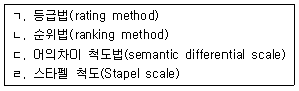
- ㄱ, ㄴ
- ㄱ, ㄷ
- ㄱ, ㄹ
- ㄱ, ㄷ, ㄹ
- ㄴ, ㄷ, ㄹ
(정답률: 알수없음)
54. 다음 중 비율척도가 아닌 것은?
- 몸무게
- 체온
- 나이
- 키
- 소득 금액
(정답률: 알수없음)
55. 리커트척도(Likert Scale)에 관한 설명으로 옳은 것은?
- 모든 항목에 차등적인 가치를 부여한다.
- 리커트척도는 명목척도(nominal scale)의 일종이다.
- 각각의 지표에 대해 조사대상자가 응답할 수 있는 안정적인 서열구조의 범주를 제시한다.
- 리커트척도의 장점은 개인들마다 응답의 준거틀이 다르다는 것이다.
- 응답자가 중간 정도의 온건한 응답을 할 경우 이를 민감하게 측정할 수 있다.
(정답률: 알수없음)
56. 측정에 있어서 타당도와 신뢰도에 관한 설명으로 옳지 않은 것은?
- 신뢰도는 측정 장소와 시간에 따라 측정값의 일관성을 파악하는 것이다.
- 신뢰도는 측정시 발생하는 무작위적 오류와 관련이 있다.
- 타당도는 측정시 발생하는 체계적인 오류와 관련이 있다.
- 기준타당도는 측정도구 개발전문가가 측정의 타당성을 판단하는 것이다.
- 신뢰도가 높다는 것이 타당도가 높다는 것을 보장하지는 않는다.
(정답률: 알수없음)
57. 산업체 시장조사를 수행할 때 기업들의 종업원 수나 자본금 규모 등을 기준으로 몇 개의 집단으로 나눈 후 각 집단별로 빈도에 따라 적정수의 표본을 할당해서 조사하는 방법은?
- 군집표본추출법(cluster sampling)
- 체계적표본추출법(systematic sampling)
- 할당표본추출법(quota sampling)
- 층화표본추출법(stratified sampling)
- 판단표본추출법(judgement sampling)
(정답률: 알수없음)
58. 선정된 표본 중에서 응답을 얻어내지 못하여 생기는 오류는?
- 무응답 오류
- 불포함 오류
- 조사현장의 오류
- 자료기록 및 처리의 오류
- 표본오류
(정답률: 알수없음)
59. 표본의 크기에 관한 설명으로 옳지 않은 것은?
- 표본의 크기는 표본오류와 반비례한다.
- 표본의 크기는 비표본오류와 반비례한다.
- 표본의 크기와 오류는 밀접한 관계가 있다.
- 표본의 크기에 비례해서 조사비용이 증가한다.
- 표본의 크기와 조사시간은 비례한다.
(정답률: 알수없음)
60. '약물중독자들'이나 '새터민'처럼 모집단의 성격이 잘 알려져 있지 않으며, 일상적인 표본추출방법의 적용이 어려운 경우 사용하는 방법으로, 최초에는 작은 표본을 선택한 후 점차 표본의 크기를 확대해 나가는 방법은?
- 계통 표본추출법(systematic sampling)
- 할당 표본추출법(quota sampling)
- 편의 표본추출법(convenience sampling)
- 비례층화 표본추출법(proportionate stratified sampling)
- 눈덩이 표본추출법(snowball sampling)
(정답률: 알수없음)
61. 설문지를 작성할 때 주의해야 할 사항으로 옳지 않은 것은?
- 설문지 작성의 첫 단계는 설문지작성의 목적과 범위를 선정하는 것이다.
- 설문보다 다른 방법에 의해 더 정확한 자료를 수집할 수 있는 경우 그에 해당하는 설문은 설문지에서 제외하는 것이 좋다.
- 연구자가 예상응답에 대한 충분한 지식이 있는 경우 폐쇄형(close-ended)질문을 사용한다.
- 응답내용의 일관성을 최소화하기 위해 이질적인 질문들을 앞뒤로 배치하는 것이 좋다.
- 질문순서의 변화가 응답내용의 변화를 일으키는지 검토하는 것이 좋다.
(정답률: 알수없음)
62. 표본추출에 관한 설명으로 옳지 않은 것은?
- 표본 수가 너무 적으면 제1종 오류(type I error)를 범하게 되며 통계적 검증력이 떨어진다.
- 표본이 적을수록 표집오차는 증가한다.
- 확률표집은 무작위표집 방법의 하나로서 모든 구성요소에게 표본으로 선택될 확률을 동일하게 보장하는 표집방법이다.
- 모집단을 범주별로 나누고 범주 내에서 확률표집이 이루어지는 방법은 층화표본추출법(stratified sampling)이다.
- 정규분포의 표본을 얻으려면 최소한 30개 이상의 표본수가 필요하다.
(정답률: 알수없음)
63. 층화표본추출법(stratified sampling)과 할당표본추출법(quota sampling)에 관한 설명으로 옳지 않은 것은?
- 두 표본추출법은 집단 내는 비슷하게, 집단 간은 서로 다르게 표본을 나눈다는 점에서 유사하다.
- 할당표본추출법은 확률에 의해 표본이 선택되는 방법이 아니라 조사자의 주관적 판단이나 편의에 의해 표본이 선택되는 방법이라는 점에서 층화표본추출법과 다르다.
- 층화표본추출법과 비교했을 때 할당표본추출법은 적용이 쉽고, 집단에 대한 사전정보가 없어도 적용이 가능하다는 장점을 가지고 있다.
- 할당표본추출법은 층화표본추출법과 비교했을 때 추측결과에 대한 정확성이 떨어지며 일반화가 어렵다.
- 할당표본추출법은 층화표본추출법에 비해 표본선택의 편견(bias)을 야기할 위험이 적다.
(정답률: 알수없음)
64. 다음의 자료수집방법 중 성격이 다른 것은?
- 서베이법
- 면접법
- 투사법
- 설문지법
- 관찰법
(정답률: 알수없음)
65. 연구윤리에 어긋나는 것은?
- 연구의 정확성, 정직성, 진실성 확보
- 연구 대상자의 동의 확보
- 연구 대상자의 프라이버시 보호
- 연구계획서를 작성할 때, 이미 발표된 연구결과 또는 문장을 인용표시 없이 발췌하여 사용한 경우
- 학술지에 기고한 내용을 대중서, 교양잡지에 쉽게 풀어 쓰는 행위
(정답률: 알수없음)
66. 온라인조사에 관한 설명으로 옳지 않은 것은?
- 표본편중의 문제를 쉽게 해결할 수 있다.
- 우편이나 전화로 접근이 불가능한 집단도 쉽게 접근할 수 있다.
- 저렴한 비용으로 신속하게 자료를 수집할 수 있다.
- 응답 여부를 확인할 수 있고 늦어질 경우 독촉 메일과 같은 후속조치를 할 수 있다.
- 홈페이지가 이미 구축된 조직의 구성원을 대상으로 조사할 때 매우 유용하다.
(정답률: 알수없음)
67. 다음의 실험설계 기법 가운데 성숙효과(maturation effect)를 통제할 수 없는 것은?
- 단일집단 사전사후측정 설계
- 두 집단 사전사후측정 실험설계
- 두 집단 사후측정 순수실험설계
- 솔로몬 4개 집단 순수실험설계
- 두 집단 사후측정 유사실험설계
(정답률: 알수없음)
68. 대인 면접조사의 특성으로 옳은 것은?
- 연구문제에 대한 사전지식이 희박할수록 구조화된 대인 면접조사방법을 사용하는 것이 좋다.
- 비구조화된 대인 면접조사에 의해 수집된 자료는 낮은 상호신뢰성을 보인다.
- 대인 면접조사는 우편 설문조사에 비해 질문과정에서 유연성이 상대적으로 낮다.
- 대인 면접조사는 우편 설문조사에 비해 환경차이에 의한 설문응답의 무작위적 오류를 증가시킨다.
- 대인 면접조사는 우편 설문조사에 비해 응답률이 낮다.
(정답률: 알수없음)
69. 우편 설문조사의 특징이 아닌 것은?
- 응답자에 대한 접근성이 낮다.
- 설문구성이 제한적이다.
- 응답자에 대한 통제가 어렵다.
- 설문지 회수율이 낮다.
- 심층규명(probing)이 어렵다.
(정답률: 알수없음)
70. 비반응성(unobtrusiveness) 자료수집 방법에 의한 조사연구가 아닌 것은?
- 마모 측정(erosion measure) 연구
- 퇴적 측정(accretion measure) 연구
- 문헌 연구(document study)
- 내용 분석(content analysis)
- 전자 서베이(electronic survey)
(정답률: 알수없음)
71. 자료수집방법 중 관찰에 관한 설명으로 옳지 않은 것은?
- 관찰은 개인적이거나 민감한 사안에 관한 자료를 수집하기 힘들다.
- 관찰은 복잡한 사회적 맥락이나 상호작용을 연구 하는데 적절한 방법이다.
- 관찰에 의해 수집된 자료는 양적 분석보다 질적해석에 더 적합하다.
- 관찰은 양적 연구와 질적 연구에 모두 활용될 수있다.
- 관찰은 의사소통능력이 없는 대상에게는 활용될 수 없다.
(정답률: 알수없음)
72. 측정과 척도의 타당도에 관한 설명으로 옳은 것은?
- 예견타당도(predict validity)는 액면타당도(face validity)의 예이다.
- 수렴타당도(convergent validity)와 판별타당도(discriminant validity)는 기준타당도에 해당한다.
- 액면타당도는 측정하려는 개념과 관련된 이론에서도출된다.
- 이타심을 측정하는 척도와 희생심을 측정하는 척도와의 관계는 판별타당도와 관련이 있다.
- 운전면허 필기시험 성적과 주행능력시험 성적과의 상관관계의 정도는 예견타당도와 관련이 있다.
(정답률: 알수없음)
73. 2차 자료의 이용에 관한 설명으로 옳지 않은 것은?
- 2차 자료의 이점은 시간과 비용을 절약할 수 있는 것이다.
- 2차 자료는 조직의 내부 2차 자료와 외부 2차 자료로 구분할 수 있다.
- 2차 자료는 조사목적의 적합성, 자료의 정확성, 일치성 등을 기준으로 평가될 수 있다.
- 모든 마케팅 조사에서 2차 자료는 반드시 필요하다.
- 2차 자료는 경우에 따라 당면한 조사 문제를 평가할 수도 있다.
(정답률: 알수없음)
74. 가설검증에 관한 설명으로 옳은 것은?
- 연구가설(research hypothesis)은 모집단의 모수를 사용하여 표현되며, 영가설(null hypothesis)은 표본집단의 통계치를 사용하여 표현된다.
- 가설 검증에서는 연구가설과 영가설의 기각여부를 판단할 수 있다.
- 영가설이 옳은데도 불구하고 기각함으로써 발생하는 오류를 제1종 오류(type I error)라고 하며, 이를 최소화하기 위해서는 유의수준을 낮추는 것이 필요하다.
- 만약 영가설이 잘못된 것임에도 불구하고 그것이 기각되지 않음으로써 발생하는 오류를 제2종 오류(type II error)라고 하며, 유의수준이 높아지면 제2종 오류의 가능성도 증가한다.
- 통계검증은 표본의 결과를 통해 연구자가 실제로 검증하고자 하는 연구가설을 직접 검증하는 것이다.
(정답률: 알수없음)
75. 질적 연구의 특징으로 옳지 않은 것은?
- 주관성이 배제된 객관적 사실을 파악하기 어렵다.
- 연구 참여자가 처한 상황과 맥락을 총체적으로 파악할 수 있다.
- 질적 연구는 연역적 과정을 전제로 이루어진다.
- 질적 연구에 필요한 자료는 단어(word)의 형태로 수집된다.
- 연구자 자신이 중요한 자료수집의 도구이다.
(정답률: 알수없음)
76. 크론바흐 알파계수(Cronbach's alpha)에 관한설명으로 옳지 않은 것은?
- 척도를 구성하는 항목들간에 나타난 상관관계 값을 평균처리한 것이다.
- 알파계수는 -1에서 +1의 값을 취한다.
- 척도를 구성하는 항목 중 신뢰도를 저해하는 항목을 발견해 낼 수 있다.
- 척도의 신뢰도를 측정하는 대표적인 수단이다.
- 척도를 구성하는 항목 간의 내적 일관성을 측정한다.
(정답률: 알수없음)
77. 전체 n개의 항목들을 가진 측정도구를 매 홀수번째 항목들과 매 짝수 번째 항목들로 이루어진 두 세트의 측정도구로 나눈다. 이렇게 나눈 후 그것들을 각기 독립된 측정도구들로 간주하여 서로 간의 상관관계를 추정하여 신뢰도를 파악하는 방법은?
- 유사-양식(parall-forms) 기법
- 이분절(split-half) 기법
- 일회집단 사례연구(onetime case study) 기법
- 검사-재검사(test-retest) 기법
- 상호 관찰자(interobserver reliability) 기법
(정답률: 알수없음)
78. 3개 이상의 집단 사이에 나타나는 평균 차이를 분석하는데 사용하는 통계기법은?
- 요인분석
- t검증
- 분산분석
- 카이자승(X2)검증
- 군집분석
(정답률: 알수없음)
79. 보고서 작성에 관한 설명으로 옳은 것은?
- 조사방법에 관한 전문용어를 가급적 많이 사용하여 작성한다.
- 세부사항들을 모두 보고서에 포함시킨다.
- 그림이나 표는 사용하지 않는다.
- 연구자가 관심을 가지는 문제에 대한 해결방안을 제시한다.
- 2차 자료를 활용한 경우 출처를 표시할 필요가 없다.
(정답률: 알수없음)
80. 면접원이 자유 응답식 질문에 대한 응답을 기록할 때 지켜야 할 원칙이 아닌 것은?
- 면접조사를 진행한 이후 최종 응답을 기록한다.
- 응답자가 사용한 어휘를 원래 그대로 기록한다.
- 질문과 관련된 모든 것을 기록에 포함시킨다.
- 모든 캐어묻기와 코멘트를 포함시킨다.
- 같은 응답이 반복되더라도 가감 없이 있는 그대로 기록한다.
(정답률: 알수없음)
3과목: 영어
81. 빈 칸에 들어갈 단어로 옳은 것은?
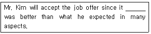
- much
- often
- only
- little
- rarely
(정답률: 알수없음)
82. 빈 칸에 들어갈 단어로 옳은 것은?
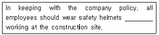
- while
- besides
- to
- on
- so
(정답률: 알수없음)
83. 밑줄 친 부분과 의미가 가장 가까운 것은?
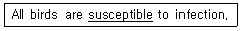
- reluctant
- insane
- disposable
- assertive
- vulnerable
(정답률: 알수없음)
84. 밑줄 친 부분을 우리말로 바르게 옮긴 것은?
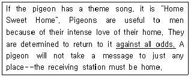
- 가끔씩
- 어떤 어려움에도 불구하고
- 바람을 타고
- 모든 무리를 이끌고
- 강풍을 피해서
(정답률: 알수없음)
85. 빈 칸에 들어갈 표현으로 옳은 것은?
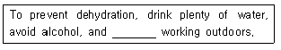
- to stop
- will stop
- stopping
- stopped
- stop
(정답률: 알수없음)
86. 밑줄 친 부분 중 문법적으로 옳지 않은 것은?
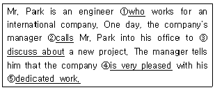
- ①
- ②
- ③
- ④
- ⑤
(정답률: 알수없음)
87. 빈 칸에 들어갈 표현으로 옳은 것은?
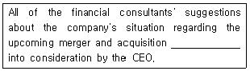
- is taking
- was taken
- takes
- have been taken
- has taken
(정답률: 알수없음)
88. 밑줄 친 관사 중 문법적으로 옳지 않은 것은?
- Birds of an feather flock together.
- Take this medicine four times a day.
- We found a great many stars in the night sky.
- The old lady reads the Bible everyday.
- How long have you been playing the guitar?
(정답률: 알수없음)
89. 다음 중 어법이 가장 적절한 것은?
- My father encouraged me to study abroad.
- I am difficult to get up early in the morning.
- He cannot afford to buying such an expensive car.
- We couldn't hardly finish the report on time.
- His report on the car accident is very confused.
(정답률: 알수없음)
90. 빈 칸 A와 B에 들어갈 관계사로 옳은 것은?
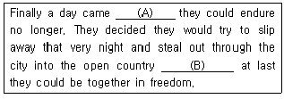
- (A) where, (B) which
- (A) when, (B) where
- (A) which, (B) what
- (A) what, (B) wherever
- (A) why, (B) when
(정답률: 알수없음)
91. 빈 칸 A와 B에 들어갈 표현으로 옳은 것은?
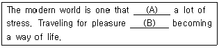
- (A) creating, (B) is
- (A) is created, (B) has
- (A) creates, (B) is
- (A) is creating, (B) has
- (A) creates, (B) makes
(정답률: 알수없음)
92. 빈 칸 A, B, C에 들어갈 표현으로 옳은 것은?
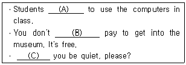
- (A) can, (B) must, (C) Could
- (A) must not, (B) have to, (C) Should
- (A) can't, (B) need, (C) Would
- (A) are allowed, (B) have to, (C) Would
- (A) are able, (B) do, (C) Will
(정답률: 알수없음)
93. 빈 칸에 들어갈 표현으로 옳은 것은?
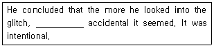
- little
- the less
- the more
- more
- the most
(정답률: 알수없음)
94. 밑줄 친 부분 중 문법적으로 옳지 않은 것은?
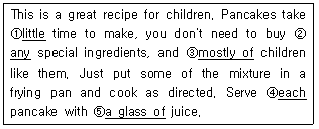
- ①
- ②
- ③
- ④
- ⑤
(정답률: 알수없음)
95. 다음 중 어법이 옳지 않은 것은?
- He wants to invite her to his party.
- I didn't use to like it, but I love it now.
- This is the first time I've been late for school.
- While she was cooking, I was setting the table.
- When have you been to Jeju Island?
(정답률: 알수없음)
96. 빈 칸에 들어갈 표현으로 옳은 것은?
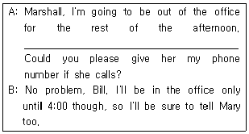
- My son-in-law, Tom Harris, will be in the office this afternoon.
- If you get any other calls, can you just take a message?
- It's not really important that my client Amy Harris gets in touch with me.
- I'm expecting a call from my client Amy Harris.
- Sure. I'll see you tomorrow.
(정답률: 알수없음)
97. 대화가 이루어지는 장소의 연결이 옳은 것은?
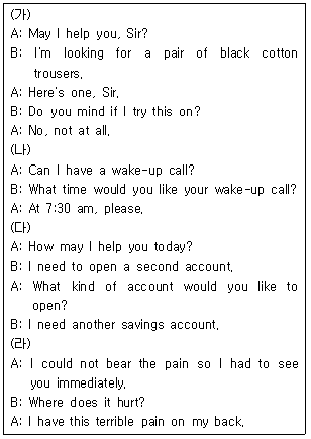
- (가) 옷가게, (나) 호텔, (다) 은행, (라) 병원
- (가) 옷가게, (나) 호텔, (다) 공항, (라) 병원
- (가) 옷가게, (나) 병원, (다) 은행, (라) 학교
- (가) 학교, (나) 호텔, (다) 공항, (라) 병원
- (가) 학교, (나) 공항, (다) 우체국, (라) 병원
(정답률: 알수없음)
98. 밑줄 친 부분을 우리말로 잘못 옮긴 것은?
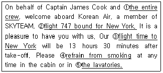
- 전체 승무원
- 뉴욕행 747편
- 뉴욕행 출발시간
- 흡연을 삼가다
- 화장실
(정답률: 알수없음)
99. 다음 아파트 임대 광고문의 내용과 일치하는 것은?
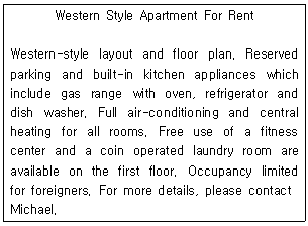
- 세탁기 사용 시 동전 필요 없음
- 식기세척기 없음
- 유료 체력단련시설이 있음
- 외국인만 입주할 수 있음
- 세대별로 개별 난방을 해야 함
(정답률: 알수없음)
100. 빈 칸에 들어갈 표현으로 옳은 것은?
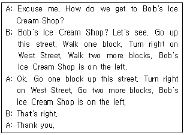
- Okay, I understand.
- You can't miss it.
- You're very welcome.
- Let's see.
- I'm looking for it.
(정답률: 알수없음)
101. 밑줄 친 부분과 의미가 가장 가까운 것은?
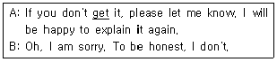
- take
- understand
- finish
- promise
- look into
(정답률: 알수없음)
102. 빈 칸에 들어갈 표현으로 옳은 것은?
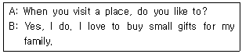
- rent a car to look around
- see cultural shows
- try the local food
- travel with someone else
- shop for souvenirs
(정답률: 알수없음)
103. 대화의 내용이 자연스럽지 않은 것은?
- A: Where are you planning to go on a vacation?
B: I'll probably stay two or three days. - A: Got it! Thanks a lot for your help.
B: Don't mention it. - A: You're in good shape. How do you do it?
B: Well, I go to the gym three times a week. - A: Excuse me. I think I'm lost. Is there amovie theater near here?
B: Let me see. Oh, yes. There's one on Fall Street. - A: Could you tell me how often the buses tothe city leave?
B: They leave every 15 minutes.
(정답률: 알수없음)
104. 빈 칸에 들어갈 표현으로 옳은 것은?
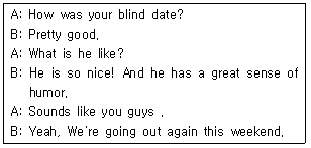
- tied the knot
- took after each other
- oil and vinegar
- hit it off
- had an argument
(정답률: 알수없음)
1⑤. 대화의 내용이 자연스럽지 않은 것은?
- A: What's your major?, B: I often do meditation.
- A: Can you please speak English in class?, B: Oh, sorry!
- A: Britney Spears is my favorite singer, B: Oh, really? I like Beyoncé.
- A: How about watching a movie?, B: Sure, why not?
- A: Thank you for the drink, B: Don't mention it.
(정답률: 알수없음)
106. 빈 칸에 들어갈 표현으로 옳은 것은?
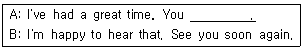
- were screwed
- made my day
- owed me
- helped yourself
- made an appointment
(정답률: 알수없음)
107. 빈 칸에 들어갈 표현으로 옳은 것은?
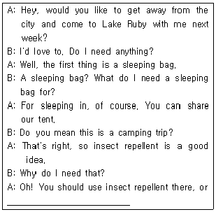
- too bad you can't find anything you like.
- just in case it rains.
- you'd better take a pair of comfortable shoes.
- you'll get eaten alive.
- you might need an extra set of warm clothes.
(정답률: 알수없음)
108. 빈 칸에 들어갈 표현으로 가장 자연스러운 것은?
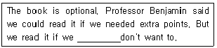
- cannot
- must not
- have to
- don't have to
- ought not to
(정답률: 알수없음)
109. 밑줄 친 부분과 의미가 가장 가까운 것은?
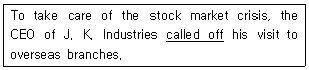
- postponed
- cut off
- canceled
- made a call
- asked for
(정답률: 알수없음)
110. 우리말을 영어로 옮긴 문장 중 어색한 것은?
- 양식에 기입해주세요. Please, fill in the form.
- 통화 중입니다. The line is very bad.
- 자리 좀 지켜주시겠습니까? Can you save my place for me, please?
- 그분은 지금 자리에 없습니다. He is out at the moment.
- 예약을 확인하고 싶습니다. I'd like to confirm my reservation.
(정답률: 알수없음)
111. 빈 칸에 공통으로 들어갈 전치사로 옳은 것은?
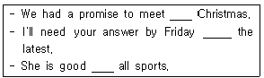
- at
- for
- from
- in
- on
(정답률: 알수없음)
112. 글의 전개상 빈 칸에 들어갈 표현으로 가장 적절한 것은?
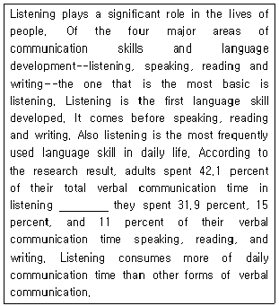
- when
- that
- while
- which
- who
(정답률: 알수없음)
113. 다음 신문기사의 내용과 일치하지 않는 것은?
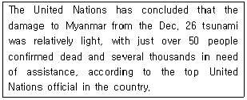
- 구호를 기다리는 이들은 수천 명이 된다.
- 쓰나미로 인한 피해가 비교적 가벼웠다.
- 사망자가 50명을 약간 초과하였다.
- 유엔 고위관리의 말을 인용한 보도이다.
- 유엔은 이 문제를 오늘 논의할 예정이다.
(정답률: 알수없음)
114. 다음 편지의 내용은?
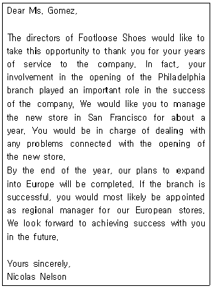
- 새로운 Philadelphia 지점에 Ms. Gomez를 부매니저로 채용한다는 편지
- 새로운 Europe 지점에 Ms. Gomez를 신입사원으로 채용한다는 편지
- 새로운 Philadelphia 지점 개설에 대한 거절 편지
- 새로운 San Francisco 지점에 Ms. Gomez가 전근 가기를 거절하는 편지
- 새로운 San Francisco 지점에 Ms. Gomez를 발령한다는 편지
(정답률: 알수없음)
115. 다음 글에서 여성 환자가 앓고 있는 것으로 추정 되는 질병은?
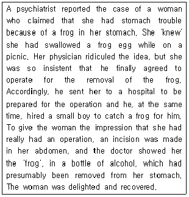
- 맹장염
- 정신질환
- 당뇨병
- 심장병
- 근육통
(정답률: 알수없음)
116. 빈 칸에 들어갈 단어로 옳은 것은?
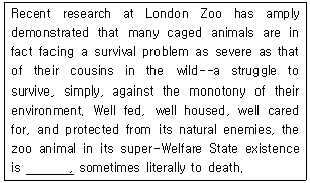
- hungry
- ugly
- ill
- afraid
- bored
(정답률: 알수없음)
117. 글의 내용과 일치하는 것은?
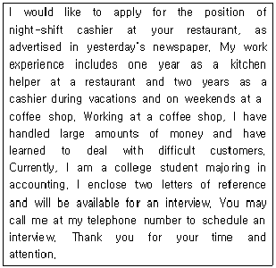
- 낮 시간 근무를 지원하고 있다.
- 요리사 경력이 풍부하다.
- 현재 회계사로 많은 돈을 다루고 있다.
- 어려운 환경 때문에 직장을 구하고 있다.
- 추천서를 동봉하여 지원하고 있다.
(정답률: 알수없음)
118. 글의 주제로 가장 적절한 것은?
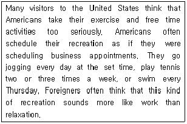
- 조깅과 테니스, 수영은 미국인들에게 인기가 많다.
- 건강을 위한 효과적인 활동들이 최근에 많이 소개 되고 있다.
- 외국인들은 미국인들이 휴식시간도 체계적이고 규칙적으로 활용하고 있다고 생각한다.
- 외국인들은 미국인들의 휴식시간이 많지 않다고 생각한다.
- 미국인들은 다른 나라 사람들보다 운동을 더 많이 하는 편은 아니다.
(정답률: 알수없음)
119. 글의 내용과 일치하는 것은?
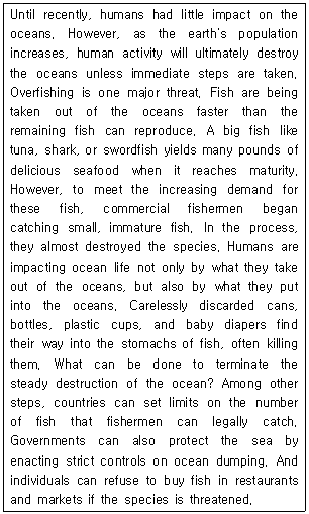
- Even if the appropriate conservational steps are taken, the oceans will eventually disappeared.
- Catching big fish is the main reason for the extinction of species.
- The speed of fish reproduction is faster than that of catching fish.
- Overfishing and dumping into the ocean are the two major threats to the ocean.
- Customers are recommended not to order any fish in the restaurants.
(정답률: 알수없음)
120. 밑줄 친 부분의 의미는?
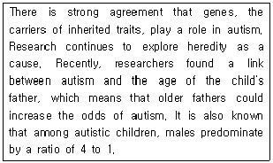
- numbers cannot be divided evenly
- eccentricities
- possibilities
- additions
- capabilities
(정답률: 알수없음)